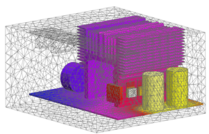
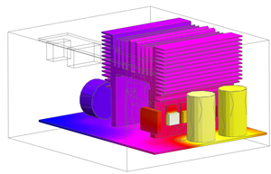
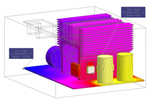

显示单元温度结果
 后处理导航器
后处理导航器
-
 power_supply_coupled_solution
power_supply_coupled_solution -
 加载
加载 -
power_supply_coupled_solution
-
新建后处理视图

-
 power_supply_coupled_solution (如果需要，请展开)
power_supply_coupled_solution (如果需要，请展开)
-
 温度 – 单元的
温度 – 单元的注释
颜色条上的温度变化范围大约为25 – 65 °C。
-
 编辑后处理视图 (后处理工具条)
编辑后处理视图 (后处理工具条)
-
边和面
-
边
特征

-
确定
后处理视图对话框

-
 标记开/关 (后处理工具条)
标记开/关 (后处理工具条)

-
注意最小温度与最大温度。
-
标记开/关 (后处理工具条) ，以关闭标记显示